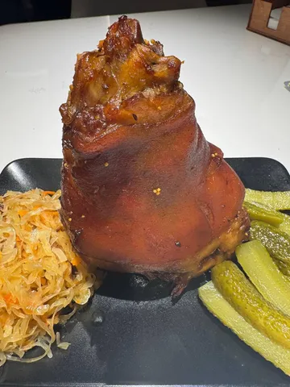
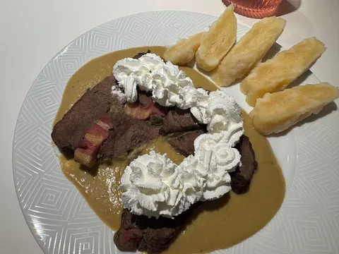
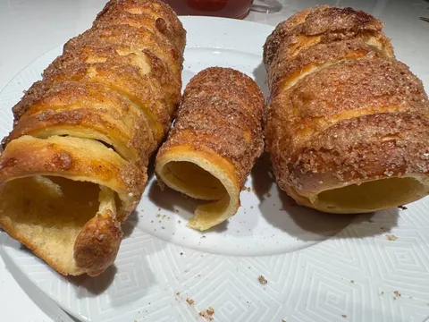
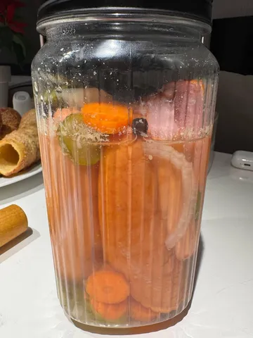
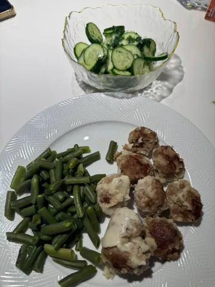
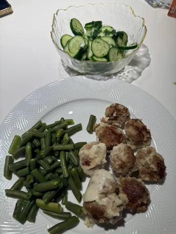

Чехия
Наши молитвы о мясе были услышаны, и в этот раз попалась Чехия. Кстати, Чехия - одна из наших любимых стран. Архитектура, природа, кухня, пиво, сам дух страны - хорошо попадают в нас, и потому мы там были раза 4, хотя редко ездим в одно место дважды.
В этот раз мы даже вместо традиционно чтения википедии с сыном просто пересматривали фотографии из путешествий в Чехию. А заодно - экспресс-курс чешского языка для Лёхи, из которого мы на удивление много помним. Млувим, але нерозумим.
Из одной из поездок мы даже привозили книгу рецептов традиционных чешских блюд, поэтому кулинарные изыскания в этот раз были не в новинку, но от того не менее хороши.
Вепржево ко'лено (запеченая свиная рулька) в сопровождении тушеной квашеной капусты с тмином - практически символ Чехии - открывал неделю под тмаве пивечко.
Свичкова на смэ'тане (говяжья вырезка в соусе из овощей и сливок) в компании кнедликов - менее известное, но более традиционное блюдо - сложно, долго, хорошо, но вырезка подкачала.
Трдельники (в них мы влюбились еще в те времена, когда у нас про них особо не слышали) всегда хороши, но рекомендую наматывать потолще, тонкое тесто пересыхает.
Завтра нас ждут утопенцы - колбаски/шпикачки, всю неделю маринующиеся в овощах и уксусе - пойдут закуской под пятничное пенное.
А на выходных снова классика - гуляшова полевка в хлебовем котлику - густой наваристый мясной суп, подаваемый в котелке из хлеба.
А выбор следующей страны будет неслучаен, так как билеты туда были куплены давно. Но об этом - в следующий раз.
Наши молитвы о мясе были услышаны, и в этот раз попалась Чехия. Кстати, Чехия - одна из наших любимых стран. Архитектура, природа, кухня, пиво, сам дух страны - хорошо попадают в нас, и потому мы там были раза 4, хотя редко ездим в одно место дважды.
В этот раз мы даже вместо традиционно чтения википедии с сыном просто пересматривали фотографии из путешествий в Чехию. А заодно - экспресс-курс чешского языка для Лёхи, из которого мы на удивление много помним. Млувим, але нерозумим.
Из одной из поездок мы даже привозили книгу рецептов традиционных чешских блюд, поэтому кулинарные изыскания в этот раз были не в новинку, но от того не менее хороши.
Вепржево ко'лено (запеченая свиная рулька) в сопровождении тушеной квашеной капусты с тмином - практически символ Чехии - открывал неделю под тмаве пивечко.
Свичкова на смэ'тане (говяжья вырезка в соусе из овощей и сливок) в компании кнедликов - менее известное, но более традиционное блюдо - сложно, долго, хорошо, но вырезка подкачала.
Трдельники (в них мы влюбились еще в те времена, когда у нас про них особо не слышали) всегда хороши, но рекомендую наматывать потолще, тонкое тесто пересыхает.
Завтра нас ждут утопенцы - колбаски/шпикачки, всю неделю маринующиеся в овощах и уксусе - пойдут закуской под пятничное пенное.
А на выходных снова классика - гуляшова полевка в хлебовем котлику - густой наваристый мясной суп, подаваемый в котелке из хлеба.
А выбор следующей страны будет неслучаен, так как билеты туда были куплены давно. Но об этом - в следующий раз.

266 просмотров · 12 реакций
Открыть в Telegram · Открыть пост на сайте


 
